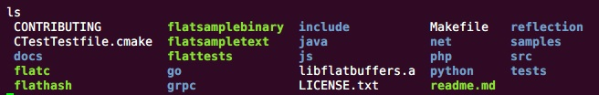

FlatBuffer是一个跨平台的序列化库，可以在C++,C#, C, Go, Java, JavaScript, PHP, Python语言中使用，最初这个库是Google为游戏开发中所使用，其源代码地址在Github。FlatBuffer提供了详细的使用文档，可以参考Google.github.io主页上的教程。
编译
FlatBuffer主要使用flatc程序进行操作，flatc是通过编译FlatBuffer的源码生成的。由于FlatBuffer是跨平台的，所以FlatBuffer提供了不同平台上编译可执行文件flatc的方法，我们这里使用Linux环境对FlatBuffer进行编译。
安装gcc g++环境
编译FlatBuffer使用的是CMake工具，CMake需要使用到gcc和g++编译工具。首先查看Linux中是否安装gcc 和 g++：
gcc -v
g++ -v
如果没有安装则先安装gcc 和 g++
yum install gcc
yum install gcc-c++
接下来就需要安装CMake，下载CMake源码进行编译安装
wget https://cmake.org/files/v3.5/cmake-3.5.2.tar.gz
tar -zxvf cmake-3.5.2.tar.gz
cd cmake-3.5.2/
sh bootstrap
gmake
make install
下面就可以编译flatc程序
cd flatbuffers/
cmake -G "Unix Makefiles"
make
这样就生成了flatc, flatctest等一系列的可执行文件，其中flatctest是用来测试程序是否正确生成，接下来我们就可以正式开始FlatBuffer的使用。

使用
Schema
不同于JSON，FlatBuffer使用Schema来定义数据的结构，这里先给出一份简单的Schema，更加高级的使用以及相关语法请参见Google官方的Schema。
namespace org.sample;
table People {
name:string;
age:int;
}
root_type People;
将该Schema命名为sample.fbs并保存，接下来就可以通过flatc来编译这个Schema
./flatc --java sample.fbs
这是就会在当前目录下生成相关的java代码，可以从生成的代码结构看出，Schema中的namespace就是Java中的包名，table就相当于Java类，root_type是每个Schema文件必须的属性。
序列化
将生成的包导入Java工程，同时还需要将flatbuffers/java路径下的com文件夹导入工程，这个文件夹下面是FlatBuffer需要依赖的jar包。下面上代码
FlatBufferBuilder builder = new FlatBufferBuilder(0);
int sun = builder.createString("Sun");
//下面向People中填充属性
People.startPeople(builder);
People.addName(builder, sun);
People.addAge(builder, 18);
int tom = People.endPeople(builder);
builder.finish(tom);
ByteBuffer buffer = builder.dataBuffer();
下面我们将序列化的数据进行反序列化
People people = People.getRootAsPeople(buffer);
System.out.println(people.name());
System.out.println(people.age());
到此我们简单的使用一下FlatBuffer，从上面的过程中可以看出FlatBuffer使用相比较于JSON比较繁琐，但是从官方的数据来看性能比较好。